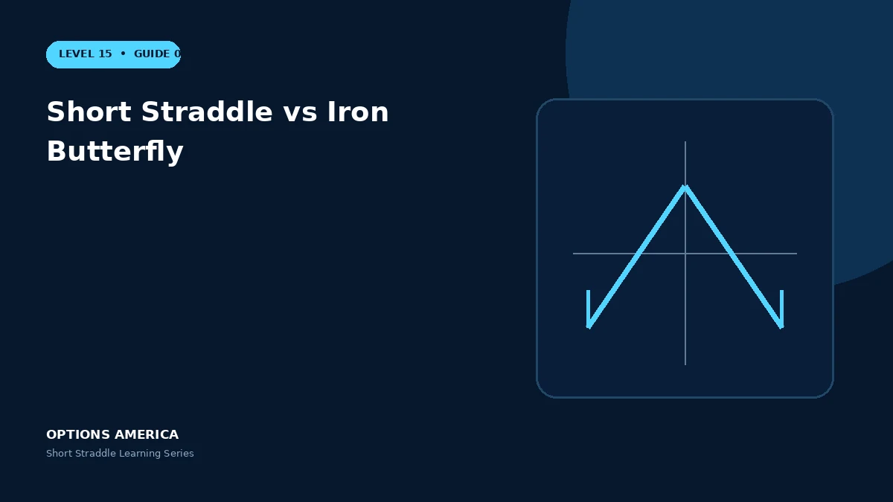

Compare the uncovered short straddle with a defined-risk iron butterfly across wings, credit, buying power and outcomes.
Core position
Both structures sell a call and put at the same central strike. The iron butterfly additionally buys a lower-strike put and higher-strike call.
Credit
The short straddle receives more premium because it does not pay for wings. The iron butterfly receives less but its maximum loss can be calculated from wing width and net credit.
Buying power
Undefined-risk margin for the straddle can change as volatility and price move. The butterfly's defined maximum loss generally creates a clearer capital requirement.
Management
Wings reduce catastrophe risk but can add slippage and complicate rolls. Choose the structure by loss tolerance and liquidity rather than headline credit.
A practical example
A 100 straddle collects $9. Buying the 90 put and 110 call for $2 converts it to a 10-point iron butterfly with a $7 net credit and $3 maximum loss per share.
This simplified scenario focuses on expiration outcomes; live prices and risks will differ. Live option prices also reflect the underlying price, time decay, rates, dividends, liquidity and transaction costs. Greeks are theoretical estimates, not guarantees.
Build a risk-first trading plan
Before using short straddle vs iron butterfly, record the underlying price, strike, expiration, total credit and contract multiplier. Calculate both expiration breakevens, then model losses beyond them rather than stopping at the profitable range. The maximum credit is visible at entry, but the largest future loss is not.
Stress at least five underlying prices, a volatility increase and decrease, and several dates. Include a gap that cannot be adjusted intraday. Review delta, gamma, theta and vega at the position and portfolio level because several neutral premium trades can become directional together.
Define a profit target, maximum tolerated loss, margin reserve, event rule and latest exit date. Use a single multi-leg order where possible and verify both legs after every fill or adjustment. This process does not eliminate risk, but it makes the decision measurable and repeatable.
After the trade, record actual movement, volatility change, slippage and the largest directional exposure. Comparing those results with the original forecast helps separate sound execution from a lucky outcome and improves future duration, strike and position-size decisions.
Frequently asked questions
Which has defined risk?
The iron butterfly.
Why does the straddle collect more?
It does not buy protection.
Do wings guarantee easy exits?
No; liquidity still matters.
Continue the Short Straddle cluster
Explore related guides: Best Market Conditions for a Short Straddle · Short Straddle Expiration and DTE Selection · Short Straddle Options Strategy Explained. For a structured sequence, use the free Level 15 – Short Straddle course.
Options involve risk and are not suitable for every investor. This material is educational and is not investment, tax or legal advice. Greeks are theoretical estimates, and contract terms and broker requirements can vary.